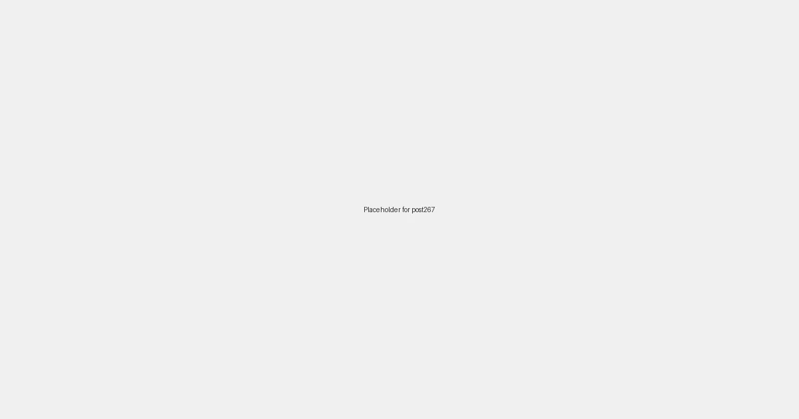

Local SEO for Restaurants: A Recipe for Success in 2026

In the competitive restaurant industry, being the best-kept secret is a recipe for disaster. With diners increasingly turning to their smartphones to decide where to eat, a strong online presence is no longer optional—it's essential for survival. This is where local SEO for restaurants comes in, helping you connect with hungry customers in your area and turn them into loyal patrons.
Why Local SEO is a Must-Have for Restaurants
Think about the last time you were looking for a place to eat. You probably pulled out your phone and searched for "restaurants near me," "best pizza in [city]," or "tacos open now." These are the moments that matter for restaurants, and if you're not showing up in the search results, you're missing out on a huge opportunity.
Your Google Business Profile: The Foundation of Your Online Presence
Your Google Business Profile (GBP) is the cornerstone of your local SEO strategy. It's the first thing potential customers see when they search for your restaurant, so it's crucial to make a good impression. Here's what you need to do:
- Claim and verify your listing: This is the first and most important step.
- Complete your profile: Fill out every section, including your address, phone number, hours, and website.
- Upload high-quality photos: Showcase your food, your restaurant's interior and exterior, and your staff.
- Encourage customer reviews: Reviews are a powerful ranking factor and a great way to build trust with potential customers.
Optimizing Your Website for Local Search
Your website is another important piece of the local SEO puzzle. Here are a few tips to optimize it for local search:
- Include your name, address, and phone number (NAP) on every page: This helps search engines understand your location.
- Create location-specific pages: If you have multiple locations, create a separate page for each one.
- Optimize your menu for search: Use descriptive language and include keywords that people are likely to search for.
- Make sure your website is mobile-friendly: More and more people are searching for restaurants on their phones, so it's essential that your website looks great on all devices.
Conclusion
Local SEO is a powerful tool that can help you attract more customers and grow your restaurant business. By following the tips in this article, you can improve your online visibility, connect with hungry diners in your area, and turn them into loyal patrons.